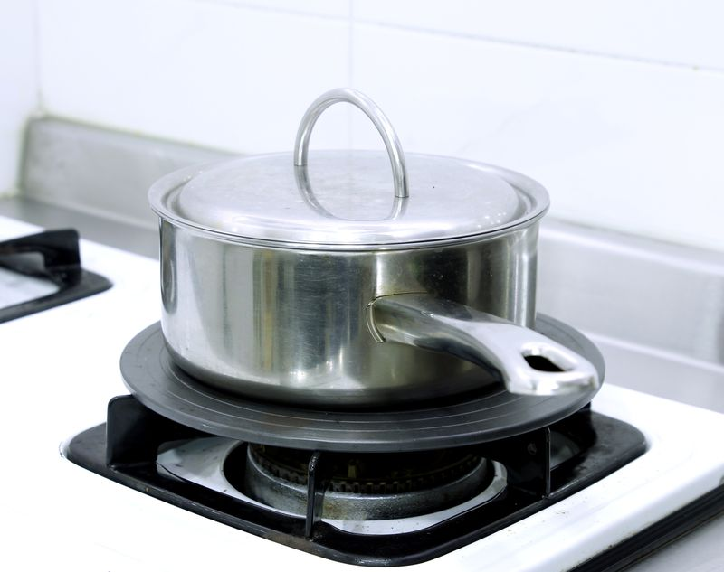
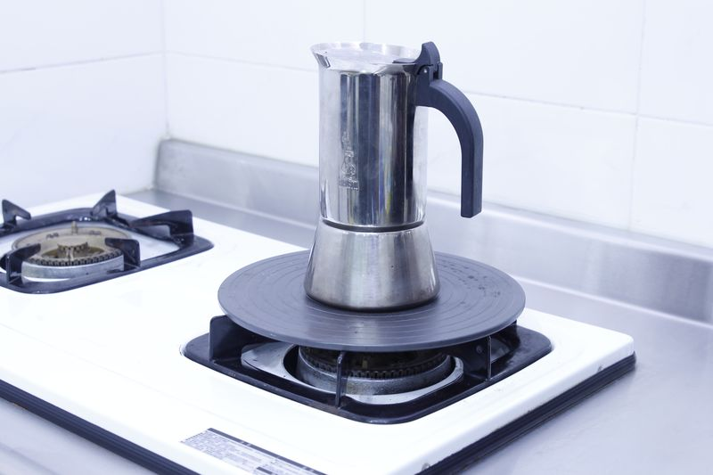
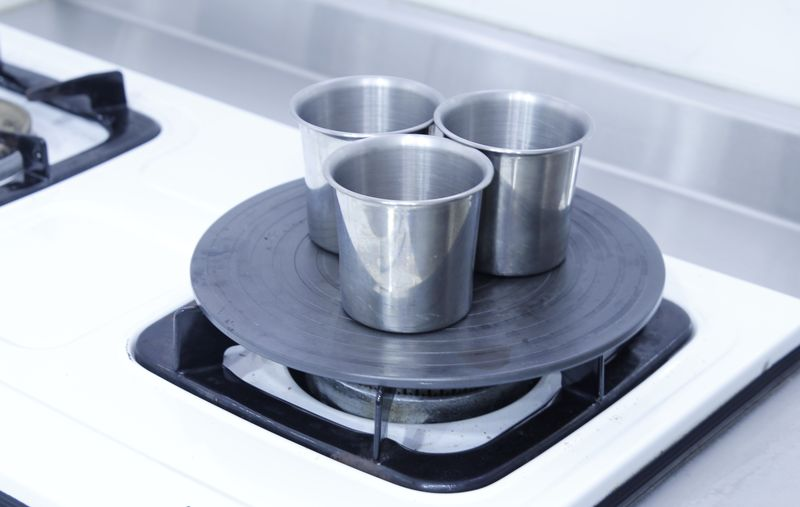
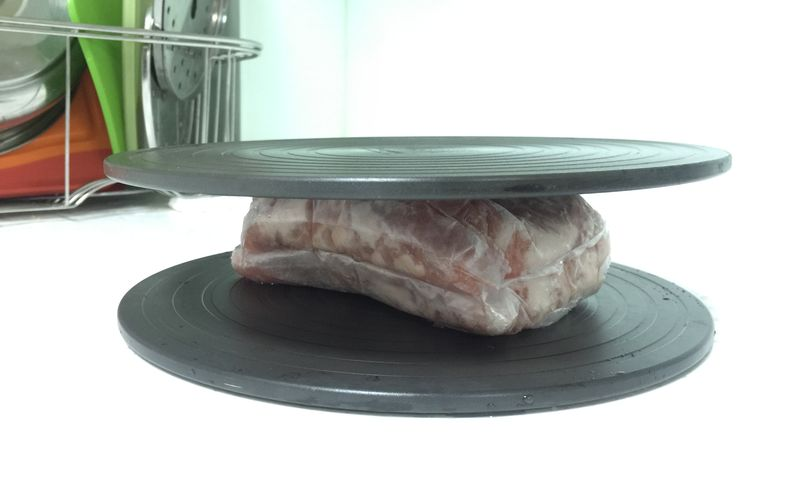
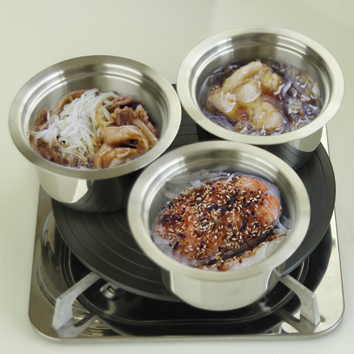
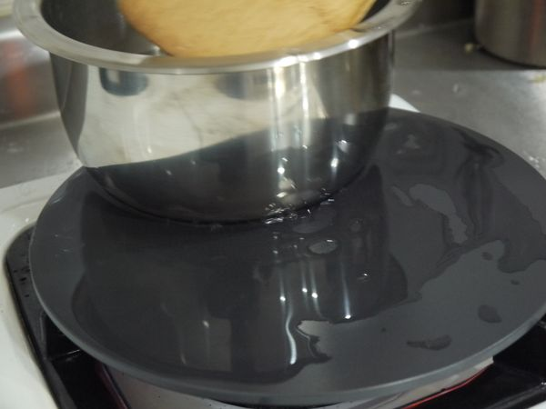
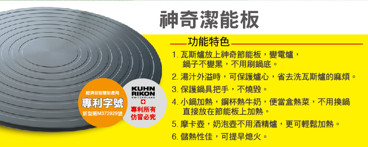
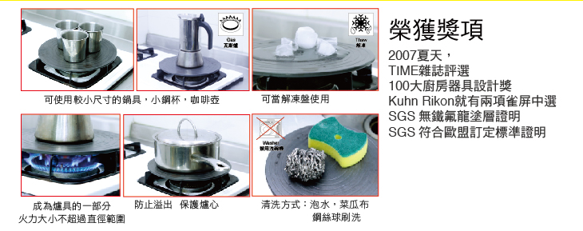
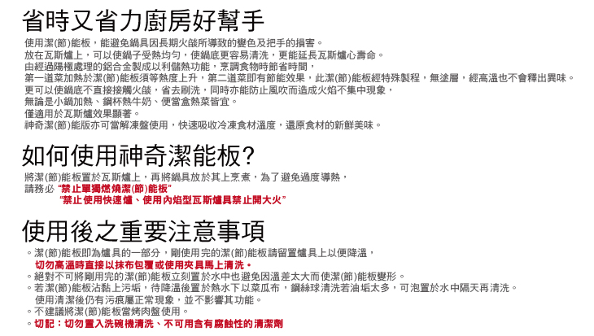

KUHN RIKON神奇潔能板(節能板)
護鍋必備神器！TIME雜誌評選100大廚房器具（2007夏天） 高級的鍋具，你捨得讓鍋底被爐具刮傷，鍋身被火燒黃燒黑，手把燒毀嗎？
潔能板隔開了鍋子與火，可以保護鍋具，保護爐具，還能節省瓦斯費，快速解凍食材。
價格：2,400 Go!
1）美鍋不變黑：節能板能保護鍋子不會被直火燒到，導致鍋底黑黃，需要刷洗鍋子。
2）鍋底沒刮痕：節能板可以保護鍋底，不會因為跟爐架摩擦造成刮痕。
3）延長爐具壽命：保護爐具，煮東西時不會因為噗鍋導致爐心壞掉，變紅色火焰。

4）小鍋也OK：迷你鍋 Mini pan、摩卡壺等小鍋，在爐架上無法站穩（因為爐架中間洞口很大），如果有節能板，就能放上去加熱。


5）受熱均勻：使用節能板後，鍋底的受熱很均勻，所以鍋內食物的受熱也會更均勻。
6）快速解凍：節能板可以幫食物解凍，讓食材在最短的時間解凍完成，保留食物的新鮮。當你有兩片節能板時，請上下都夾一片，更縮短解凍時間喔！

7）節省瓦斯： 節能板有儲熱功能，所以第一道菜的料理時間會久一點，第二道菜開始，每道料理都能節省瓦斯，因為可以提早關火，讓節能板續煮。第三道，第四道也一樣。
8）有污垢如何清洗？
1.剛使用完的潔能板為高溫狀態，請先留置於爐具上，等它稍微降溫，但仍有一些餘溫時，用溫水加上中性清潔劑（例如瑞康屋的黑桀特潔晶液或鍋靚絜強效皂），以菜瓜布、鋼絲球或刷子清潔。
2.潔能板於高溫時，切勿以抹布包覆，布料纖維會黏在潔能板上，也不可以立刻浸泡在冷水中，馬上清洗，以免因為溫差太大而變形。
3.若油垢太多，可泡在水中，隔天再清洗。
4.請勿使用小蘇打粉清潔，小蘇打粉為鹼性，會讓節能板的陽極處理還原，導致硬度下降，容易變形或氧化。
5.不建議使用洗碗機清潔，因為洗碗機通常會加入鹼性清潔藥粉，也會讓節能板的陽極處理還原。
6.每次使用完都要清潔，如果用好幾次才洗，污漬被加熱後會吃色，導致無法洗刷，但是不影響功能。
7.節能板相當於爐具的一部分，清潔後若有污痕是正常現象，並不影響功能表現，仍然能夠保持鍋底與爐心的清潔，可安心使用。
9）適用什麼爐具？
每片說明書上都有載明，營業用的快速爐、西餐爐、鼓風爐、高湯爐等都不適用。
10）適用什麼鍋具？
適用於所有可以「直火加熱」的鍋具（炒鍋因為底部是圓弧形，接觸面積較小，所以導熱較慢）但是如果是像一些鍋身較薄的也不適用，因為使用時水會跳動。

11）不能空燒、不要用中心火
節能板上面一定要有鍋子才能開火，不能空燒。 而且是要用內外兩圈的火，而不是用中心火（其實中心火火力是很大的）。 火的大小不要超過節能板範圍，使用中小火即可，無須開大火。
12）認明防滑螺紋設計
節能板一定要有防滑螺紋才是 KUHN RIKON 瑞康屋出產的商品，很重要喔！

有保障的真品 你買對了嗎？
為了廚房安全，購買潔能板，請認明有防滑螺紋溝槽的專利設計！
有螺紋溝槽的潔能板是瑞康屋研發的專利商品，為重力鑄造而成，經過陽極處理，能耐高溫。鍋子的湯汁若溢出，鍋子不會滑動，很安全。
表面平滑的潔能板，在鍋具的湯汁溢出時，容易讓鍋具滑動、傾倒，湯料四溢可能會阻塞爐心，進而造成廚房的危險，過去已經出現過多起意外事件。




規格：
品名：KUHN RIKON神奇潔能板(節能板)
貨號：2082
價格：$2400
規格：直徑24CM
材質：鋁合金（經陽極處理）
原產地：台灣
推薦商品
KUHN RIKON 瑞士新易拉轉
前往KUHN RIKON 瑞士多功能開罐器
前往KUHN RIKON 瑞士玉米刮刮樂
前往KUHN RIKON 瑞士平煎鏟不沾有縫
前往推薦料理